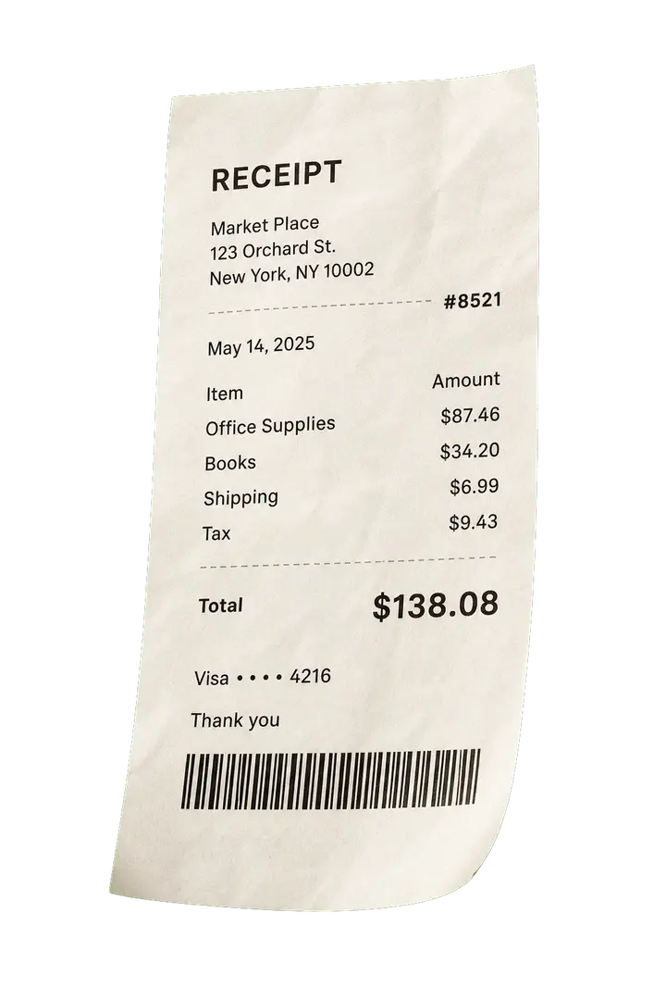

“The clean record appears before anyone has to open a spreadsheet. Our team checks the fields, approves the exception, and moves on.”
Documents to done
From paperwork
to clean records.
Upkeep turns receipts, statements, and files into organized records you can actually use.

Built for document-heavy teams
Retail Studios Trades ClinicsSOC 2 TYPE II
Enterprise grade security
Trusted by teams that cannot afford messy records.
Upkeep is built for daily paperwork: receipts, statements, invoices, work orders, and the small details that usually get handled too late.
“Receipts used to sit until Friday. Now the document, category, payment, and proof are together while the purchase is still fresh.”
“It feels like the paperwork gets translated into something our accountant can use, without asking the team to learn another system.”
“Expense details land in the right place before the close. The record is attached, searchable, and ready for the person who needs it next.”
“The handoff finally feels calm. Staff upload what they have, and Upkeep turns the mess into something we can trust.”
Live example
Clear the paperwork without opening a spreadsheet.
Upkeep keeps the day's documents moving from intake to cleared, so records are ready before small tasks become a backlog.
Open the inbox.
Drop in mixed paperwork from the day without sorting it first.
Upkeep reads the stack.
Vendor, total, notes, and statement lines lift out of the page automatically.
The record takes shape.
Useful fields appear as a prepared record, not as a wall of extracted text.
Clear the final exception.
The statement line is resolved while the ready fields stay usable.
Workspace
The work stays organized from the first upload.
Document inbox
Search
All
Receipts
Statements
Work orders
Built for the way paperwork actually arrives.
You do not need to rename files, sort folders, or copy numbers by hand before you can start. Upkeep reads the stack, groups the records, and makes the next action obvious.
- Receipts, statements, work orders, and notes enter one inbox.
- Prepared fields are ready to search, clear, or hand off.
- Unclear details are separated instead of slowing everything down.
Cleared update
The exception is cleared. The stack can move.
Matched totals
Clean fields can move forward without waiting on an exception queue.
Statement line resolved
The record is prepared and the charge has been confirmed for handoff.
Confirmed
$84.20 hardware charge
Keep your workflow
Prepared records are ready for reconciliation, handoff, or export.
Ready when you are
Give Upkeep a stack of paperwork. Get organized records back.
Upload the document. Upkeep prepares the record. You stay in control through final clearance.